Bu
menü, bir eksene bağlı farklı sanat yapılarının hem planda (örneğin,
derrrame4.lil çizim modunu kullanarak) hem de boykesit
gösterimi altında (örneğin, şablon Estruc.gui kullanarak) gösterimi için ve ayrıca kübaj
ve planda çizimi için ilgili dolgu konilerini tanımlamaya olanak tanır.
Tüm bu verileri tanımlamaya olanak tanıyan diyalog kutusu aşağıdadır:
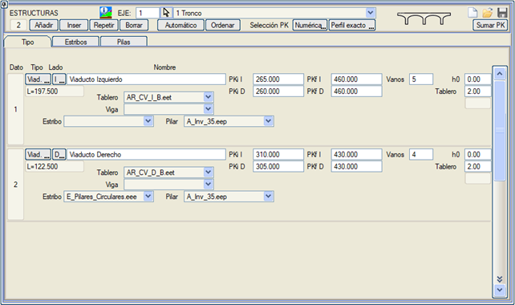
Sanat Yapıları
[Otomatik]: HESAP BÖLGELERİ
tablosundan sanat yapılarını çıkarır:
- Sanat yapısı olarak işaretlenmiş bölümlerden → Viyadük.
- Uygulanacak tip kesitin 0 olduğu bölümlerden → Viyadük.
- Bitkisel toprak kalınlığı < 0 olan bölümlerden → Viyadük.
- Yarmada bir tünel tip kesitinin uygulandığı bölümlerden → Tünel.
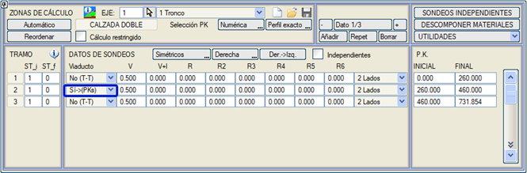

|
Veri tutarlılığı açısından sanat yapıları önceden HESAP BÖLGELERİ
menüsünde tanımlanmalıdır. |
[Sırala]: girilen farklı verileri KM'lerine göre yeniden sıralar.
[KM Ekle]: kutuda tanımlanan tüm verilere bir KM artışı belirtmeye olanak tanır.
Viyadük simgesine tıklayarak, bir viyadüğü oluşturan farklı elemanların geometrisini tanımlayabileceğimiz Sanat Yapısı Elemanları penceresine girebiliriz.
Tip Sekmesi
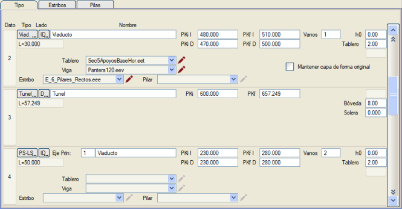
- Tip: çeşitli sanat yapısı tipleri kabul edilir:
- Tali eksenin boykesitinde görülecek üstgeçit (ÜG-BT)
- Tali eksenin boykesitinde görülecek altgeçit (AG-BT)
- Ana eksenin boykesitinde görülecek üstgeçit (ÜG-BA)
- Ana eksenin boykesitinde görülecek altgeçit (AG-BA)
- Taraf: sanat yapısının çizileceği taraf; sağ (D), sol (I) veya her ikisi (ID) olabilir.
- İsim: boykesitte etiketlenecek sanat yapısının adı.
- Ana/Tali Eksen: Eğer bir geçit ise, tanımlanan tipe göre ana veya tali eksen. Tali eksenin boykesitinde görülecek bir geçit durumunda, program belirtilen bölümde mevcut eksenin (tali) profilinde çizmek için ana eksenin kesitinden bir kesit alacaktır.
- KM'ler:
sanat yapısının başlangıç ve bitiş kilometreleri. Hemen altında sanat
yapısının uzunluğu da gösterilir (L=...). Yalnızca bir sembolün
gösterildiği ana boykesitte görülecek geçitler durumunda, geçidin merkez
kilometresi belirtilmelidir. Her iki platform için tek bir tabliyeye
sahip viyadüklerde, eğer her iki tarafa karşılık gelen [ID] seçeneği
seçiliyse ve her iki platformun banketleriyle birlikte farklı genişlikleri
varsa, o zaman KM, KM'nin şevli kesimle veya geometrik eksenle
çakışması için sağ ve sol KM'lerin ortalaması olarak kabul edilir.
- Açıklıklar: sanat yapısının sahip olacağı açıklık sayısı. Orta ayak sayısı, açıklık sayısından bir eksik olacaktır.
- SİMGE: Eğer ana eksenin boykesitinde görülecek bir geçit ise, eklenecek sembolün numarası ile sembol için uzunluk (Uzun.) ve yerleştirme kotu (Z). Kullanabileceğimiz sembol örnekleri S311 ve S310'dur. Bu semboller, ilk konumda yer alan Ölçek Faktörü komutunu taşır ve FX veya FY seçeneklerini kullanmaz. Sembol, Y'ler metre cinsinden gerçek yüksekliklerle ve X'ler birim uzunlukla (bir metre için) tasarlanır.
- Tabliye: Bir viyadük durumunda, tabliye kalınlığı. Bu alanda, örneğin, demiryollarında ray ve balast yüksekliğini düşmek için tabliyenin üst yüzü ile kırmızı kot arasındaki kot farkı belirtilebilir.
- Kemer: sanat yapısının tünel tipinde olması durumunda, kemer yüksekliği.
- Radye: kırmızı kot ile tünel/altgeçit radyesi arasındaki mesafe. Altgeçit durumunda, tali eksenin boykesiti çizildiğinde ana eksenin 3D modelinin altgeçit bölgesinde geçici olarak çizilmesi ve kesişiminin hesaplanarak profilde çizilmesi için ana eksenin önceden hesaplanmış olması gerekir.
- Eğer sanat yapısını Viyadük tipi olarak işaretlersek, bileşiminin bazı elemanlarını tanımlayabiliriz: tabliye, kiriş, kenar ayak ve orta ayak.
Aksi belirtilmedikçe bu elemanlar tüm açıklıklar ve orta ayaklar için
genel olacaktır, ancak sanat yapısının farklı bölümleri için Kenar Ayaklar (kenar ayak) ve Orta Ayaklar (tabliye, kiriş ve orta ayak) sekmelerinden özelleştirilebilirler.
Kenar Ayaklar Sekmesi
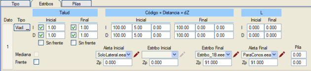
- 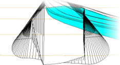Şev: Ön
kısımdaki dolgu konisinin şevi. Eksenin her iki tarafındaki başlangıç
ve bitiş konilerinin şevi için farklı değerler belirtilebilir; ayrıca
her koniyi bağımsız olarak çizmek için veya sadece koninin ön şev
olmadan çizilmesi için (Ön şevsiz) kutucuklar bulunur. 0 olarak bırakılırsa, koni, .lil dosyasında tanımlanan şevle oluşturulacaktır.
- Kod + Mesafe + dZ:
Koninin tepe noktasını bir kod, o koda yatay bir mesafe ve bir derinlik
aracılığıyla konumlandırmaya olanak tanır. 0 olarak bırakılırsa, koni, .lil dosyasında tanımlandığı
şekilde oluşturulacaktır.
- L: Koninin tepe noktasının sanat yapısının başlangıcına olan boyuna mesafesi; bu, koninin tepe noktasının kanat duvarının sonunda yapıldığı durumlar içindir.
- Refüj:
Bu kutucuğu işaretlersek, refüjde dolgu konileri yapılmaz. Her iki
taraftaki tabliyenin iç kenarlarını birleştiren çizgi üzerinde dikey bir
şev bırakılır.
- Ön Cephe: Bu kutucuğu işaretlersek, düz bir ön cephe yapar.
- Kanat/Kenar Ayak başlangıç/bitiş:
Sanat yapısının başında ve sonunda hangi kanat/kenar ayağın
kullanılacağını belirtir. Kenar ayak durumunda, buraya yazılanlar Tip sekmesinde beyan edilen genel kenar ayağa göre önceliklidir.
- Zp: kanat duvarı tabanının mutlak kotu.
- Orta Ayak: Orta ayakların genişliği ve uzunluğu. Dairesel orta ayaklar için, uzunluk = sıfır, genişlik = çap.
Orta Ayaklar Sekmesi
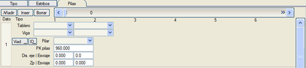
Ekle, Araya Ekle, Sil: Ekle sona ekler, Araya Ekle ve Sil diyalog kutusunun üst yapısında çalışır.
- Tabliye: her bir açıklıkta hangi tabliyenin kullanılacağını belirtir. Buraya yazılanlar, Tip sekmesinde beyan edilen genel tabliyeye göre önceliklidir.
- Kiriş: her bir açıklıkta hangi kirişin kullanılacağını belirtir. Buraya yazılanlar, Tip sekmesinde beyan edilen genel kirişe göre önceliklidir.
- Orta Ayak: belirtilen açıklıklar arasında hangi orta ayağın kullanılacağını belirtir. Buraya yazılanlar, Tip sekmesinde beyan edilen genel orta ayağa göre önceliklidir.
- 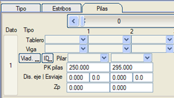Orta Ayak KM'leri: Eğer orta ayaklar
eşit aralıklıysa, bu kutucuklar sıfır bırakılır ve program bunları
otomatik olarak hesaplar. Değilse, burada 1000 adede kadar orta ayağın
KM'leri beyan edilir. Bu değerler sayısal veya grafiksel olarak
girilebilir. Üstgeçit durumunda, profilde çizimi için ana eksenin
önceden hesaplanmış olması gerekir, böylece tali eksenin boykesiti
çizildiğinde ana eksenin 3D modeli üstgeçit bölgesinde geçici olarak
çizilir ve kesişimini hesaplayarak profilde çizer ve gerekirse orta
ayakların taban kotlarını hesaplar.
- Eksene Mes.: orta ayak merkezinin eksene olan mesafesi.
- Vinoluk: orta ayağın vinoluğu (çarpıklığı).
- Zp: gövdenin tabanının mutlak kotu.
- Vinoluk Zp: temel (sömel) vinoluğu.
Özel Örnekler
Kapalı kenar ayaklarda, ön cephedeki şevin dolgu şevinden farklı bir şevle dolgu konilerine verilmesine izin verilir. Bunun için Kenar Ayaklar sekmesinde, Şev Başlangıç ve Bitiş
kutucuklarında koninin ön cephesindeki Y/D şevi tanımlanır. Sanat yapıları menüsünde Sadece koni bayrağı işaretlenmemişse, kapalı kenar ayaklarda ön cephe boyunca kapanış şevlerinin oluşturulmasına izin verilir.
Özel bir durum, düz, şevsiz bir kenar ayak olan ve sağ ve sol kenar
ayaklarda farklı KM'lere sahip otoyollardaki sanat yapıları için dolgu
konilerinin şevlerini oluşturmak istediğimizde ortaya çıkabilir. Her
iki KM arasında bir açık refüj tanımlanmıştır, böylece platform tamamen sanat yapısı üzerinde ve diğeri her iki tarafta dolgu üzerindedir.
Bu durumda dolgu konisi her bir kenar ayakta
birer tane olmak üzere ikiye ayrılır ve dış şev açık refüjünkiyle
kapatılır. Program, açık refüjün şevinin diğer platformun kenar
ayağındaki ön cephe şeviyle kesişimini hesaplar.
calzada.
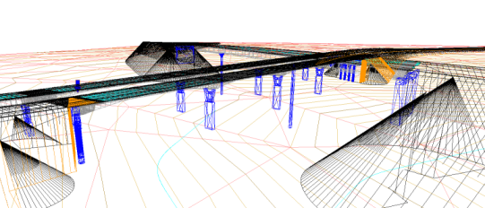
Tünel portalı
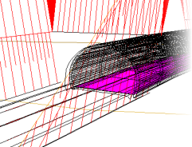 Bir tünelin portal şevinin, 7 metre yükseklikteki kilit taşından bir metre yukarıda başlaması istenmektedir. Bu durumda, tünelin giriş/çıkış hendek yarması için tip kesitin ilk 8 metrelik bölümü için şu değerler tanımlanabilir:
|
ZD2 = 100 |
D2 = 0.5 |
ZD1 = 8
|
D1 = 0.5 |
Bu, yarma şevine 8 metre yükseklikte 1301.5 koduyla bir nokta ekler. Daha sonra bu değer, Sanat Yapıları menüsünde tünel portal şevi için başlangıç ve/veya bitiş kodu olarak not edilir.
Sanat Yapıları diyalog kutusunda, Kenar Ayaklar sekmesinde,
bir "silbato" (Kemerin şev eğiminde bir düzlemle kesilmesi) uygulanan
tüneller için şunlar tanımlanabilir:
- Hs: "silbato"nun (veya kesim düzleminin) başlangıç yüksekliği, tünelin başlangıç veya bitiş KM'sinde.
- Hr: Aç-kapa tünel durumunda dolgu için başlangıç yüksekliği. Bu yükseklik Hs'den küçük veya ona eşit olmalıdır.
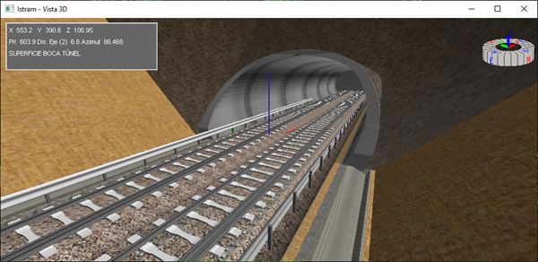
- Silbato: Kemer,
tünelin başında ve/veya sonunda, dolgu konisinin ön cephesi için
belirtilen şeve göre kesilebilir. Güncellemelerle birlikte verilen
Estructura_Doble.isa örneğinde, eksen 2'nin sonuna, tünel giriş
ağzında bu seçeneği kullanan bir tünel eklenmiştir.
- Vinoluk:
Tünel ağzı için bir vinoluk (çarpıklık) tanımlamaya olanak tanır. 100'den
farklı bir değere sahip olmalıdır. Bu bölgede, daha sık aralıklı enkesit
enterpolasyonu yapılması tavsiye edilir.
|
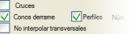Konilerin
çizilebilmesi için uygun bir çizim modunun (derrames4.lil ve benzerleri) kullanılması gerektiğini
unutmayın. Yine de, PROJE
menüsünde Dolgu konileri seçeneği etkinleştirilmişse, bir çizim
modu tanımlanmamış olsa veya bu modda dolgu konilerini çizmek için
komutlar olmasa bile, bunların metrajı hesaplanacaktır.
|
Vinoluklu Sanat Yapısı
Bir karayolunda (tek platformlu eksen) vinoluklu bir sanat yapısı şu şekilde tanımlanabilir:
- Sanat yapıları diyalog kutusunda dört KM tanımlanabilir:
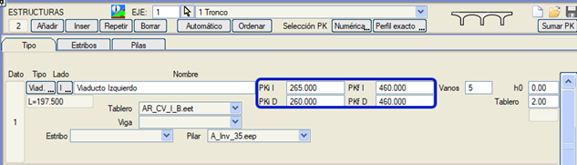
Kırmızı
kot ve boykesit çizimi ile uzunluk hesaplaması için başlangıç ve bitiş
kilometresi, iki tarafın ortalaması olacaktır.
- Hesap bölgeleri diyalog kutusunda, sadece bir bölüm yeterlidir.
Bu bölümde, sanat yapısının yaklaşık KM'leri ve Viyadük sütununda
[EVET->(KM'ler)] belirtilir. Gerçek hesaplama KM'lerini ve alt
bölümleri görmek istersek, Yeniden Sırala seçeneğine basabiliriz, ancak
doğru hesaplama için bu gerekli değildir.
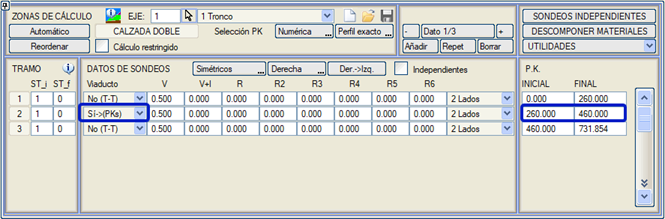
Demiryollarında, sanat yapısının kesitin bir tarafından görünüp/kaybolduğu
bölgelerde, karayolu eksenlerindekine benzer bir basamak oluşturulur,
ancak burada alt balast ve koruyucu tabaka kalınlıkları şöyledir:
- Dolgu tarafında, KORUYUCU TABAKA Menüsünün veri tablosunda tanımlanan kalınlıklardır.
- Basamağın
oluşturulması için, bu aynı diyalog kutusunda şu seçeneğin
etkinleştirilmesi gerekir: []Sanat Yapısı Bölümleri
ve burada bu bölgelerdeki alt balast ve koruyucu tabaka kalınlığı için
değerler verilir; balast doğrudan tabliye üzerine oturuyorsa sıfır
bırakılabilir.
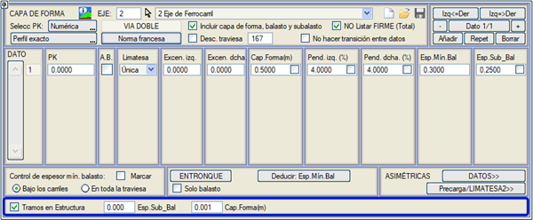
Otoyollarda Çift Sanat Yapıları ve Hesap Bölgeleri
Her platform için ayrı tabliyeye sahip viyadüklerdeki çift platformlu
projelerde, hesap bölgelerinin tanımı basitleştirilmiştir. İki
viyadüğün her biri (biri sağ platform, diğeri sol platform için) dört
KM tanımlar: sağdan ve soldan başlangıç kilometresi ve sağdan ve soldan
bitiş kilometresi.
Bu 8 KM, iki sanat yapısı farklı KM'lerde başlayıp biterse ve ayrıca kenar ayakları vinoluklu olabilirse farklı olabilir.
Hesap Bölgeleri diyalog kutusunda artık tüm sanat yapısı için sadece
bir veri eklemek yeterlidir ve ayrıca yardımcı Tip Kesitler veya açık
refüj tanımlamak GEREKLİ DEĞİLDİR.
DEMO klasöründe, kullanım örneği içeren bir Estructura_Doble.isa dosyası bulunur:
Hesap bölgelerinde 3 veri görünür:
1) ST:1 Viyadük:HAYIR(D-D) KM:0-240 (Sanat yapısından önceki dolgu bölgesi)
2) ST:2 Viyadük:EVET->(KM'ler) KM:240-460 (Sanat yapısından etkilenen bölge)
3) ST:1 Viyadük:HAYIR(D-D) KM:460-731 (Sanat yapısından sonraki dolgu bölgesi)
ISTRAM'ın bu bilgiyi nasıl ayrıştırdığını görmek için [Yeniden Sırala]
tuşuna basılabilir, ancak normal hesaplama için GEREKLİ DEĞİLDİR.
Yeniden Sırala'ya basarsak şunlar görünür:
1) ST:1 V:HAYIR(D-D) KM:0-240
2) ST:1 V:(D-Y)(D-D) KM:240-245 (Sol tabliye içeriden başlar)
3) ST:1 V:(Y-Y)(D-D) KM:245-285 (Sol tabliye tamamlandı)
4) ST:1 V:(Y-Y)(D-Y) KM:285-290 (Sağ tabliye dışarıdan başlar)
5) ST:2 V:(Y-Y)(Y-Y) KM:290-430 (Her iki tabliye tamamlandı)
6) ST:1 V:(Y-Y)(D-D) KM:430-460 (Sağ, vinoluksuz bitti)
7) ST:1 V:HAYIR(D-D) KM:460-731 (Sanat yapısı bitti).
Tip Kesit 2'nin üstyapı kalınlığı, sanat yapısının bir kısmının
göründüğü tüm KM'lerde kullanılır ve Tip Kesit 1 tüm dolgu bölgelerinde
kullanılır. 240 ve 460 KM'leri arasında refüj açıktır, ancak bunu
tanımlamaya gerek yoktur ve dolgu olduğunda ST 1, sanat yapısı
olduğunda ST 2 kullanılır.
İki tabliye başlangıçta vinolukludur ve farklı KM'lere sahip olmalarına rağmen sonda diktir.
Sağ tabliyenin dolgu konileri geriye çekilmiştir.
Kazık Listesi
Planda,
sanat yapılarını orta ayakları/kenar ayakları/kanatları/temelleri ile
içeren bir Çizim moduyla çizim yapıldığında, her eksen için pilotesX.res listesi (res klasöründe) oluşturulur ve her kazık için şunları içerir:
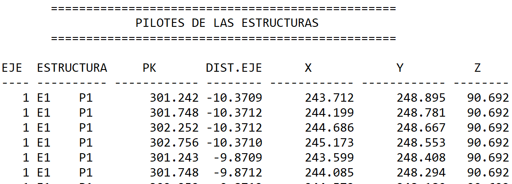
Demiryolu modunda sanat yapısı için koruyucu tabaka durumu
Demiryolları
durumunda, Orijinal koruyucu tabakayı koru kutucuğu işaretlenerek,
Koruyucu Tabaka menüsünde Sanat Yapısı Bölümleri bayrağı aktif olsa bile
(ki bu, sanat yapılarında koruyucu tabakayı kaldırır veya azaltır)
viyadüklerde orijinal koruyucu tabakanın korunmasına olanak tanır.
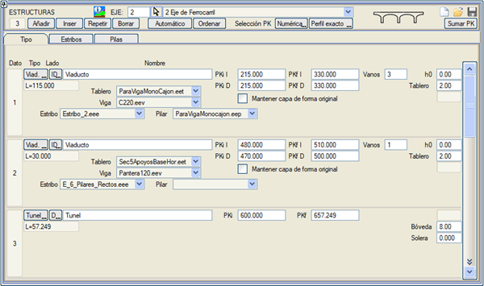
|